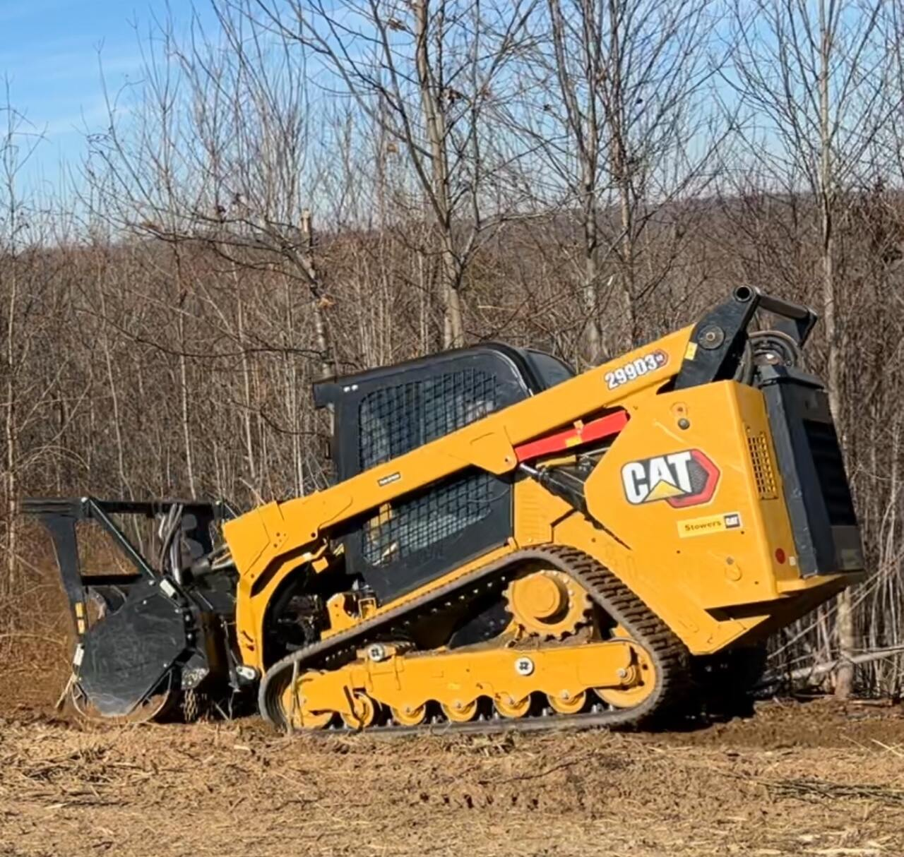

For many of our customers, hiring a land-clearing company is a new experience. Given the scale of land-clearing projects, it’s important to make sure you choose the right company. Based on our experience in the industry and conversations with potential customers, we’ve compiled a list of questions that everyone should ask a land-clearing company before hiring them.
1. Can You Provide a Transparent, Detailed Quote and Explain Any Potential Additional Costs?
When looking for a service provider, project budget and costs are typically top of mind. While most homeowners know to avoid the lowest-cost quotes and providers, it can be hard to know how much you should spend on a project. We recommend asking any potential land clearing companies about their quoting process. A reputable land clearing company can comfortably explain how they create their estimate, be transparent about the various items in their quote, and be willing to commit to staying close to the estimated costs.
2. How Do You Handle Project Timelines, and What is Your Track Record for Meeting Deadlines?
You should expect your land-clearing project to be completed on time and on budget. As demand grows for land clearing services, it might take some time to schedule your project but it is still reasonable to ask the land clearing company how they manage their projects and what steps they take to maintain consistent project timelines.
3. What Experience Do You Have with Projects Similar to Mine?
Because each property can present a unique set of obstacles, it’s important to hire a land-clearing company that has experience working in your region. An experienced local company will know how to handle the terrain and vegetation typical to your local area. Hiring a land clearing company that has dealt with projects like yours in the past will make it much more likely that you will get the results you expect.
4. How Will You Protect My Property and Minimize Disruption During the Clearing Process?
Ask the company how they plan to safeguard your existing landscape and any structures on the property. A reputable company should have measures in place to prevent damage, such as using protective barriers and careful machinery operation. They should also have a plan for managing noise, dust, and other disruptions to ensure the process is smooth and unobtrusive.
5. What is Your Process for Handling Unexpected Challenges or Changes Mid-Project?
Even with the best planning, unexpected challenges can arise during a land-clearing project. You will want to understand how the company will handle these situations. Ask them about their process for dealing with unforeseen issues, including encountering hidden obstacles, changes in weather, or other complications. A professional company should be prepared with contingency plans and communicate these strategies.
6. How Will You Communicate Progress and Address Any Concerns During the Project?
Find out how the company plans to keep you updated on progress and how they will address any concerns that may arise. Ask if they provide regular updates and who your point of contact will be. A land clearing company should be transparent and proactive, keeping you informed, whether it’s through phone calls, emails, or site meetings.
7. What Kind of Warranty or Guarantee Do You Offer on Your Work?
A warranty or guarantee can provide added assurance about the quality of the work. Ask the company what kind of warranty they offer on their services. This might include guarantees on the workmanship and coverage for any issues that might arise after the job is completed. A solid warranty reflects the company’s confidence in its work and provides you with peace of mind that any potential problems will be addressed. Be sure to get the details in writing to know exactly what is covered and for how long.
If you’re in Tennessee and looking for a reliable, experienced team to handle your land-clearing project, we would be happy to help. Our expert land-clearing team can meet with you and answer any questions you may have about a potential land-clearing project.
To get started, give us a call today!